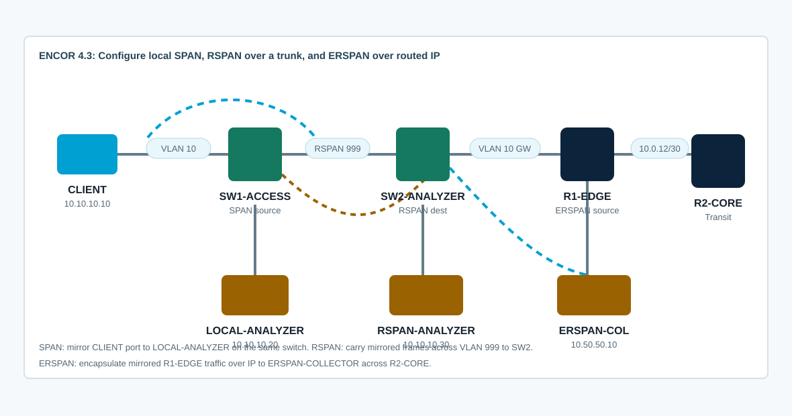

Overview
This lab targets ENCOR 4.3: configure SPAN, RSPAN, and ERSPAN. You will mirror a local access port, carry mirrored traffic across a remote-span VLAN, and configure an IP-encapsulated ERSPAN source toward a routed collector.
CCNP-level value is in knowing what traffic is mirrored, where it is sent, and what breaks capture. You will verify source direction, destination behavior, RSPAN VLAN transport, ERSPAN source/destination reachability, and analyzer-side evidence.
Topology
CLIENT traffic enters SW1-ACCESS and uses R1-EDGE as its gateway. LOCAL-ANALYZER is connected to SW1 for the local SPAN task. RSPAN-ANALYZER is connected to SW2 for remote SPAN. R1-EDGE and R2-CORE provide a routed ERSPAN path to ERSPAN-COLLECTOR.

Task 1: Baseline Connectivity and Analyzer Behavior
Confirm data-plane connectivity first. A SPAN destination port usually stops forwarding normal traffic, so know which host/interface you are sacrificing as the analyzer.
show vlan brief
show interfaces trunk
show cdp neighbors
show monitor session all
show ip interface brief
show ip routeGenerate traffic from CLIENT and verify the routed path:
ping -c 5 10.20.20.10
traceroute 10.20.20.10On analyzer hosts, use packet capture if available:
ip link set eth0 promisc on
tcpdump -ni eth0
# If tcpdump is not available, verify switch monitor-session state and interface counters.CML note: The initial topology wiring must place APP-SERVER on R2-CORE Ethernet0/1, ERSPAN-COLLECTOR on R2-CORE Ethernet0/2, and RSPAN-ANALYZER on SW2-ANALYZER Ethernet0/2. If CLIENT cannot ping 10.20.20.10, check the physical links before troubleshooting SPAN.
Task 2: Configure Local SPAN
Mirror CLIENT ingress and egress traffic from SW1-ACCESS to the LOCAL-ANALYZER port on the same switch.
! SW1-ACCESS
monitor session 1 source interface Ethernet0/0 both
monitor session 1 destination interface Ethernet0/3
!
show monitor session 1
show interfaces Ethernet0/0 counters
show interfaces Ethernet0/3 countersGenerate traffic again from CLIENT. The analyzer should see copies of frames sourced from or destined to the monitored client port.
Depth check: A SPAN destination port is not a normal access port while it is a destination. Do not use a production uplink, trunk, or user port as the destination unless you intend to dedicate it to capture.
CML note: Local SPAN syntax is supported on IOL-L2 and show monitor session 1 reports the source and destination. Some interface counter commands may return little or no output on this image, so use monitor-session state and analyzer capture where available.
Task 3: Configure RSPAN Across the Trunk
Use VLAN 999 as the RSPAN VLAN. The source session on SW1 sends mirrored frames into VLAN 999; the destination session on SW2 receives that RSPAN VLAN and sends copies to RSPAN-ANALYZER.
! SW1-ACCESS and SW2-ANALYZER
vlan 999
name RSPAN-CAPTURE
remote-span
!
interface Ethernet0/1
switchport trunk allowed vlan add 999Configure SW1 as the RSPAN source switch:
no monitor session 1
monitor session 2 source interface Ethernet0/0 both
monitor session 2 destination remote vlan 999
show monitor session 2Configure SW2 as the RSPAN destination switch:
monitor session 2 source remote vlan 999
monitor session 2 destination interface Ethernet0/2
show monitor session 2
show vlan remote-span
show interfaces trunkInterpretation focus: the RSPAN VLAN must exist, be marked remote-span, and be allowed across every trunk between the source and destination switches.
Task 4: Interpret ERSPAN Over the Routed Network
Validate the routed prerequisites for ERSPAN, then interpret the production-style ERSPAN source configuration. The available CML IOL and IOL-L2 images do not support runnable ERSPAN source configuration.
! R1-EDGE CML readiness checks
show ip route 10.50.50.10
ping 10.50.50.10 source 10.0.12.1
!
! Unsupported on this IOL-XE image:
monitor session 3 type erspan-sourceProduction-style ERSPAN source configuration to interpret on supported Catalyst/IOS XE platforms:
monitor session 3 type erspan-source
source interface Ethernet0/0 both
destination
erspan-id 30
ip address 10.50.50.10
origin ip address 10.0.12.1
no shutdown
!
show monitor session 3On ERSPAN-COLLECTOR, capture GRE/ERSPAN traffic if the platform supports ERSPAN source and tooling is available:
ip link set eth0 promisc on
tcpdump -ni eth0 proto gre or host 10.0.12.1Depth check: ERSPAN is not just “remote SPAN.” It uses IP encapsulation, so routing, source address selection, MTU, ACLs, and collector reachability matter.
CML limitation: Validation showed monitor session 3 type erspan-source is rejected on both iol-xe and ioll2-xe in this lab. Treat ERSPAN here as configuration interpretation plus routed collector-readiness validation.
Task 5: Verify Capture Scope and Direction
Run specific tests and explain which monitor should see each copy.
# CLIENT
ping -c 10 10.20.20.10
wget -O- http://10.20.20.10
traceroute 10.20.20.10
# SW1/SW2/R1
show monitor session all
show interfaces counters errors
show interfaces Ethernet0/0 counters
show interfaces Ethernet0/3 counters
show interfaces trunk
show ip interface briefAnswer these:
- Which session mirrors a local switch port?
- Which session depends on VLAN 999 being allowed on a trunk?
- Which session depends on IP routing to a collector?
- Which direction captures client-to-server only, server-to-client only, or both?
Task 6: Troubleshoot Monitoring Defects
Use show output and traffic tests to prove the issue before changing configuration.
- Local SPAN destination is configured on the wrong interface, so the analyzer sees nothing.
- Only transmit or receive direction is mirrored, so half the conversation is missing.
- RSPAN VLAN exists but is not configured as
remote-span. - RSPAN VLAN is pruned from the trunk between switches.
- ERSPAN source cannot route to the collector from the configured origin IP.
- ERSPAN ID/source does not match what the collector expects.
- The platform image does not support ERSPAN source configuration even though local SPAN and RSPAN are supported.
show monitor session all
show vlan id 999
show vlan remote-span
show interfaces trunk
show running-config | section monitor session
show ip route 10.50.50.10
show access-lists
show platform software monitor session